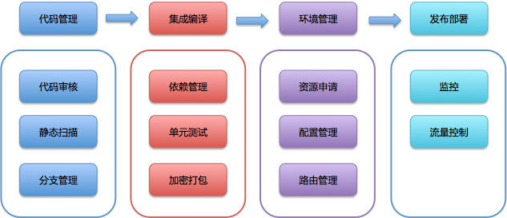
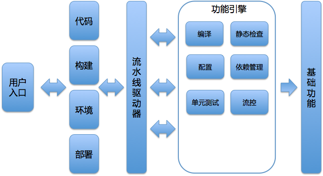

- 00 开篇词 量身定制你的持续交付体系.md
- 01 持续交付到底有什么价值？.md
- 02 影响持续交付的因素有哪些？.md
- 03 持续交付和DevOps是一对好基友.md
- 04 一切的源头，代码分支策略的选择.md
- 05 手把手教你依赖管理.md
- 06 代码回滚，你真的理解吗？.md
- 07 “两个披萨”团队的代码管理实际案例.md
- 08 测试环境要多少？从现实需求说起.md
- 09 测试环境要多少？从成本与效率说起.md
- 10 让环境自己说话，论环境自描述的重要性.md
- 11 “配置”是把双刃剑，带你了解各种配置方法.md
- 12 极限挑战，如何做到分钟级搭建环境？.md
- 13 容器技术真的是环境管理的救星吗？.md
- 14 如何做到构建的提速，再提速！.md
- 15 构建检测，无规矩不成方圆.md
- 16 构建资源的弹性伸缩.md
- 17 容器镜像构建的那些事儿.md
- 18 如何做好容器镜像的个性化及合规检查？.md
- 19 发布是持续交付的最后一公里.md
- 20 Immutable！任何变更都需要发布.md
- 21 发布系统一定要注意用户体验.md
- 22 发布系统的核心架构和功能设计.md
- 23 业务及系统架构对发布的影响.md
- 24 如何利用监控保障发布质量？.md
- 25 代码静态检查实践.md
- 26 越来越重要的破坏性测试.md
- 27 利用Mock与回放技术助力自动化回归.md
- 28 持续交付为什么要平台化设计？.md
- 29 计算资源也是交付的内容.md
- 30 持续交付中有哪些宝贵数据？.md
- 31 了解移动App的持续交付生命周期.md
- 32 细谈移动APP的交付流水线（pipeline）.md
- 33 进阶，如何进一步提升移动APP的交付效率？.md
- 34 快速构建持续交付系统（一）：需求分析.md
- 35 快速构建持续交付系统（二）：GitLab 解决代码管理问题.md
- 36 快速构建持续交付系统（三）：Jenkins 解决集成打包问题.md
- 37 快速构建持续交付系统（四）：Ansible 解决自动部署问题.md
- 持续交付专栏特别放送 答疑解惑.md
- 持续交付专栏特别放送 高效学习指南.md
- 结束语 越痛苦的事，越要经常做.md
28 持续交付为什么要平台化设计？
你好，我是王潇俊。今天我和你分享的主题是：持续交付为什么要平台化设计？
专栏内容已经更新一大半了，我和你也基本上已经逐个聊透了持续交付最核心的五大部分内容，包括：配置管理、环境管理、构建集成、发布及监控、测试管理。理解了这五大部分基本内容，你也就已经基本掌握了持续交付的核心内容，以及整个闭环流程了。
我猜想你可能已经开始尝试在团队内部署一套持续交付体系了，在部署的过程中又碰到了一些问题：比如，是否要为不同的语言栈建立不同的构建和发布通道；又比如，我还滞留在手工准备环境的阶段，无法有效自动化，应该怎么办。
要解决这些问题，你就需要达到一个更高的高度了，即以平台化的思维来看待持续交付。
那么从今天开始，我们就一起来聊聊持续交付平台化的话题吧。
什么是平台化
“平台化”这个词，你应该已经听到过很多次了吧。特别是互联网领域，我们都爱谈论平台化。那么，“平台化”到底是什么意思呢？
其实，早在20世纪70年代，欧洲的军工企业就开始利用平台化的思维设计产品了。当时的设计人员发现，如果分别研制装甲车、坦克和迫击炮的底盘，时间和金钱成本的消耗巨大。
因为这些武器的底盘型号不同，所以它们所需要的模具、零件也就不同，除了要分别设计、制造、测试、生产外，还要花费巨额成本建设不同的生产流水线，而且各底盘的保养和使用方式不同，需要进行不同的人员培训。可想而知，这样分别设计的成本是巨大的。
所以，这些军工企业们就决定要采用一个通用的底盘设计，然后在通用底盘上安装不同的炮管和武器，达到个性化的需求。
之后，这种平台化的设计和制造方法，在航空制造业和汽车制造业得到了广泛运用，获得了极大的成功，并一直被沿用至今。
而，互联网又再次给“平台化”插上了新的翅膀。互联网厂商平台化的玩法，往往是指自己搭台子，让其他人唱戏。也就是说，由互联网厂商自己提供一些基础保障能力，建立必要的标准，从而形成底层支撑平台；而由其他供应商或用户利用这个底层平台提供的服务，自己完成具体业务、功能流程设计，从而达到千人千面的个性化服务能力。
互联网厂商的这种做法，就使得企业的服务能力被放大到了极致。
持续交付为什么要实现平台化？
持续交付要做到平台化的原因，主要可以归结为以下三方面。
-
随着软件技术的发展，任何企业最终都将面临多技术栈的现实。不同的技术栈，就意味着不同的标准、不同的工具、不同的方式，所以我们就必须要通过合理的持续交付平台，去解决不同技术栈的适配工作。
-
随着持续交付业务的发展，团队会越来越庞大，分工也会越来越明细。这就要求持续交付体系能够支持更大规模的并发处理操作，同时还要不断地提升效率。更重要的是，当持续交付成为企业研发的生命线时，它必须做到高可用，否则一旦停产，整个研发就停产了。
-
随着持续交付技术本身的发展，还会不断引入新的工具，或新的流程方法。如果我们的持续交付体系不能做到快速适应、局部改造、高可扩展的话，那它自身的发展与优化将会面临严峻的挑战。
以上三个方面的原因，决定了我们需要打造一套高可用、可扩展的持续交付平台。
持续交付平台的设计
在前面的几个系列中，我分享了很多与持续交付的选型、实践与做法相关的内容。那么，在持续交付平台化的系列中，我会和你一起去整合前面看似零散的内容。
为此，我总结了实现持续交付平台化的7个步骤，也可以说是7个方法论，通过对这7个步骤的思考，你将清楚，要构建一套持续交付平台：
-
具体需要做哪些工作；
-
资源有限时，如何取舍；
-
最重要的任务是什么；
-
外部对你的限制和帮助有哪些。
希望通过我的总结，结合之前的分享，你能把持续交付的各个阶段串联起来，形成自己的平台化思路。
第一步，确定模块及其范围
交付流水线的概念，我已经在专栏第一篇文章《持续交付到底有什么价值》中介绍过了。如果你记不太清楚了，可以再回顾一下这篇文章的内容。
持续交付平台的工作流程基本就是根据这个流水线确定的，即：由编码开始，经过集成编译，再部署到相应环境，进行测试，最后发布到生产环境的过程。
持续交付平台最终将完成这个端到端的过程，那么流水线的每一步都可以认为是一个模块。由此，整个平台的核心模块就是：代码管理、集成编译、环境管理、发布部署。
这四个模块是持续交付平台中最核心，最容易做到内聚和解耦的模块。每个核心模块的周围，又围绕着各种子模块，比如：
- 代码管理模块，往往会和代码审核、静态扫描和分支管理等模块相联系；
- 集成编译模块，也会与依赖管理、单元测试、加密打包等模块相生相随的；
- 环境管理模块，离不开配置管理、路由管理等模块；
- 发布部署模块，还需要监控模块和流控模块的支持。

图1 持续交付平台核心模块
这样，如上图所示，根据交付流程划分完模块后，整个持续交付平台所要涵盖的大致范围也就确定了。
第二步，学会做减法
好的产品，都需要不断地做减法，持续交付平台也是如此。
我们已经在第一步罗列了需要完成的模块，但很显然，不可能一下子完成所有的这些模块设计和开发a。所以，持续交付平台设计的第二步，就如何抓住最核心的内容。
正如我在第一篇文章《持续交付到底有什么价值》中所说，并不是只有完整的端到端自动化才叫“持续交付”，代码管理，集成编译，环境管理、发布部署这四大核心模块，其实就是一个交付的闭环，只是交付的内容不同，但这些交付都是可测的、可评定的，所以并不是半成品。
因此，我们就可以考虑挑选最为重要或最为急迫的模块，优先加以实施。甚至，你可以优先实现这四个模块中的一个，先解决一部分问题。这样做减法的方式，我们称为横向缩小范围。
另外一种做减法的方式是减少纵向的深度。也就是优先支持单一的技术栈，或特定的、比较简单的场景，比如先搞定组织内的单体应用。
通过做减法先完成这个平台最核心模块的方式，可以控制平台的初建成本，而且效果也比较容易预期。比如，携程就是优先完成了发布部署模块，再逐步向持续交付的上游拓展。
而对于后续要做加法的事情，可以以后或者由其他团队慢慢补上，这才是平台的意义。
第三步，制定标准
研发任何系统，首先要记住一句话：“标准先行”。
我们谈到标准时，往往会涉及很多方面，比如：对外衔接的标准、对内沟通的标准；质量的标准，速度的标准等等。而对持续交付平台的设计来说，最重要的标准是定义各个模块交付产物的标准。
- 比如，代码管理模块，最终的交付产物到底是什么，形式又是什么：是一个代码包，还是git仓库地址；
- 又比如，发布部署模块，到底执行的是怎样的过程：重启应用是使用线程回收机制，还是进程重启机制；
只有制定了标准，其他团队或者其他系统才能有据可依地逐步加载到这个平台之上。
不同的组织和企业，标准和规范的内容要求不一样。所以，我无法一一列举这些标准和规范，但是你一定要清楚，这是重中之重的一个步骤。
第四步，选择合适的驱动器
所谓驱动器，就是用来驱动整个持续交付流水线的引擎。
不同规模的团队，适合的驱动器不同：
- 中小规模的团队，我推荐使用开源的系统做驱动器，比如使用Jenkins作为驱动器（当然Jenkins还有资源调度和编排能力）。
- 较大规模的团队，或者业务比较复杂的情况下，我建议自行研发驱动器，以适应自身组织的特殊需求。- 当然，我并不是说自行研发驱动器肯定就比Jenkins这样的系统要好。但是，后者更注重普适性，而前者则可以根据自身业务情况进行取舍，甚至不需要考虑流水线的可配置性，直接使用状态机写死流程。这样的好处是掌控力强，修改简单，且不易出错。
- 如果是更大规模的团队，我的建议是把驱动器与功能模块同等看待，将流水线驱动看做是平台的一个抽象功能，既可以驱动CI或CD功能，也可以驱动其他的任务；其他模块提供的服务都是这个驱动服务可以执行的具体实现而已。- 在复杂情况下，“人”才是最好的驱动器，可以做出最正确的判断。有些特殊的复杂场景，机械的驱动器程序已经无法解决，需要人工介入。所以通过驱动服务，既可以驱动自动化任务，同时又可以驱动“人”，才能保证最优的结果。
第五步，抽象公共能力
既然我们要设计一个平台，自然就要把很多公共功能抽象到平台层处理。需要抽象的公共功能，主要包括：
-
账户与权限，包括单点登录，以及鉴权、授权体系等等；
-
用户行为日志，即任何行动都要能够被追溯；
-
消息通知，即提供统一的通知能力；
-
安全与故障处理，即系统级的防护能力和故障降级。
持续交付平台的设计，除了要抽象这些公共功能外，还需要考虑打通上下游系统的问题，比如需要从CMDB获取服务器信息，从应用中心获取应用信息等等。
第六步，考虑用户入口
完成了持续交付平台内部功能的设计后，就要考虑用户入口的问题了。
用户入口，是提供一个统一的站点、使用命令行格式、使用IDE插件，还是直接使用Jenkins系统作为与用户交互的界面，可以根据团队的资源、能力等实际情况进行选择。
通常情况下，我会比较建议为持续交付独立形成一个 Portal，这样不会受到其他系统的限制，你可以根据自己的设计更好地完成用户引导和使用体验的设想。
第七步，聚力而成
通过上面这六步，我们已经初步完成了持续交付平台的设计，之后就是如何实现的问题了。
其实，如何实现持续交付的平台化，主要看你的决心和实践。但一定要记住，如果你决定要实施一个持续交付的平台，那就一定要学会运用团队的力量。
比如，架构同学，一定能够在制定规范和架构方面给你建议和帮助；而运维同学，肯定在环境治理和部署方面比你更有经验。
所以，你要做的是搭好平台，利用团队优势共同建设持续交付体系。
以上的内容，就是搭建一套持续交付平台最关键的七个步骤了。这里，我们可以用一张图片，表示这个持续交付平台的大致架构。

图2 持续交付平台的大致架构
总结
因为技术和业务的复杂性不断增加，持续交付需要解决的问题也变得越来越复杂。所以，我们需要利用平台化的思想解决持续交付体系日益复杂的问题。
持续交付是一个需要所有研发团队共同参与的活动，持续交付平台的建设也同样需要借助各个团队、各个职能的力量。
如果你正在负责持续交付这件事情，你应该充分考虑如何搭台，让大家来唱戏这样件事情。
思考题
你所在的组织内，持续交付中的哪些内容需要其他团队协助呢？
感谢收听，欢迎你给我留言。
© 2019 - 2023 Liangliang Lee. Powered by Vert.x and hexo-theme-book.